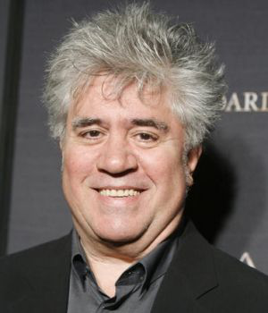

Pedro Almodóvar Caballero (Calzada de Calatrava, Ciudad Real, 25 de septiembre de 1949) es un director de cine, guionista y productor español, el que mayor aclamación y resonancia ha logrado fuera de España en las últimas décadas desde el cineasta Luis Buñuel. Ha recibido los principales galardones cinematográficos internacionales, entre otros dos premios Óscar, en diversas categorías y varios Premios Goya.
A los 18 años se trasladó a Madrid para estudiar cine, pero no pudo matricularse en la Escuela de Cine, recién cerrada. Trabajó entonces en todo tipo de empleos hasta que logró un puesto de ordenanza en Telefónica, que conservó durante doce años, al mismo tiempo que se sumergía de cabeza en el mundo de la movida madrileña, y fue miembro del grupo teatral Los Goliardos, en el que conoció a Félix Rotaeta y a Carmen Maura, y del dúo de punk-glam rock paródico Almodóvar & McNamara en el que, al lado de Fabio McNamara (Fabio de Miguel), generó canciones tan cómicas como Gran ganga o Quiero ser mamá.
Tras la muerte de su madre, rememoró su infancia en Volver (2006), película que supuso una especie de "reconciliación" entre Almodóvar y la academia de cine española (le fueron concedidos cinco premios Goya), así como su reencuentro con la actriz Carmen Maura. Además, esta obra continuó la tendencia de éxito internacional, tanto de él como de su actriz principal, Penélope Cruz, quien junto al resto del reparto femenino del film fue galardonada en el Festival de Cannes. Recibió también otros dos importantes galardones nacionales: el Premio Príncipe de Asturias de las Artes en el 2006 y el Premio Terenci Moix en el 2007.
La piel que habito
Volver
Hable con ella
Kika
La flor de mi secreto